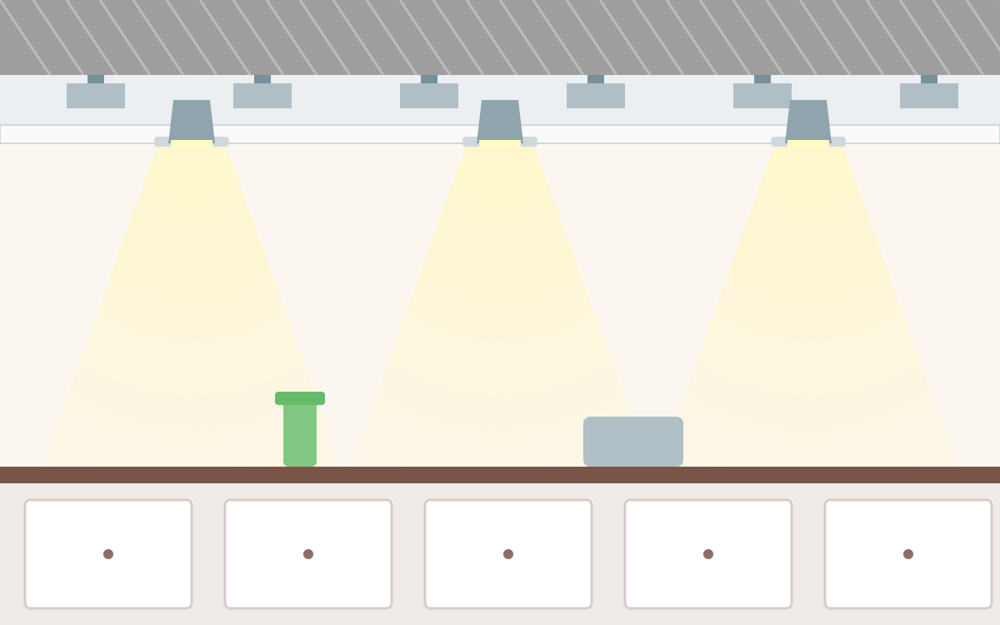

Ich werde hoffentlich noch dieses Jahr meine Küche renovieren und dabei einige Einbau-Spots installieren. Jetzt ist die Frage, welche Spots genau am meisten Sinn machen.
{kind=link}

| Rahmen | Leuchtmittel | Fassung | Volt | Preis Leuchtmittel | Lumen | Watt | Lumen/Watt | Bemerkungen |
|---|---|---|---|---|---|---|---|---|
| 2.89€: 51mm Lochdurchmesser, 81mm Rahmendurchmesser, 65mm Einbautiefe | Amazon Basics LED MR16 | MR16 (GU5.3) | 12V | 2.09€/Stück | 345 Lumen | 4.5 Watt | 77 Lumen/Watt | 15.000 Stunden Lebenszeit, 4cm hoch (mit Fassung wohl 5cm) |
| 2.89€: 51mm Lochdurchmesser, 81mm Rahmendurchmesser, 65mm Einbautiefe | Amazon Basics LED GU10 | GU10 | 230V | 2.09€/Stück | 345 Lumen | 5.5 Watt | 63 Lumen/Watt | 15.000 Stunden Lebenszeit, 5cm hoch (mit Fassung wohl 6cm) |
| 3€: 87mm Lochdurchmesser, 107mm Rahmendurchmesser, 40mm Einbautiefe | ledscom 509lm | GX53 | 230V | 4.49€/Stück | 509 Lumen | 6.2 Watt | 82 Lumen/Watt | 15.000 Stunden Lebenszeit, 2.8cm hoch |
| 23€: 84mm Lochdurchmesser, 45mm Einbautiefe | Paulmann 94306 | - | 230V | 13.59€/Stück | ? | 4 Watt | ? | 45mm Einbautiefe, keine Ahnung wie hell das ist |
Deckenhöhe
- 50mm Abstand zur Rohdecke (27mm hohes CD-Profil plus Abstand durch die Direktabhänger)
- 12.5mm für die Gipskartonplatte
- 3mm für die Spachtelmasse
⇒ 50mm + 12.5mm + 3mm = 65.5mm
GX53
Für GX53 spricht:
- Mit einem Handgriff ohne Werkzeug zu wechseln
- Kein Trafo nötig - wenn also was kaputtgeht, muss nur das Leuchtmittel gewechselt werden
- Sehr geringe Einbautiefe
- Mit 87mm Durchmesser vom Loch (107mm Durchmesser vom Rahmen) kann man ggf. auch leichter die Kabel verlegen
GU10
GU10 ist hingegen weiter verbreitet. Die Leuchtmittel sind günstiger und einfacher zu finden. Auch die Rahmen sind günstiger.
- Durchmesser Leuchtmittel: 50mm
- Höhe des Leuchtmittels von der Oberkante des Glases bis zum Ende der Stifte: 54mm
- Länge der Stifte, die in der Fassung verschwinden: ca. 7mm
- Höhe der Fassung: typischerweise 16mm (+ ca. 3mm für die Kabel)
⇒ 54mm + 16mm - 7mm + 3mm = 66mm
Man benötigt dann einen 51mm-Lochsägen-Aufsatz für den Bohrer.
GU5.3 / MR16
Für GU5.3 spricht eigentlich nichts, außer man ist in Feuchträumen.